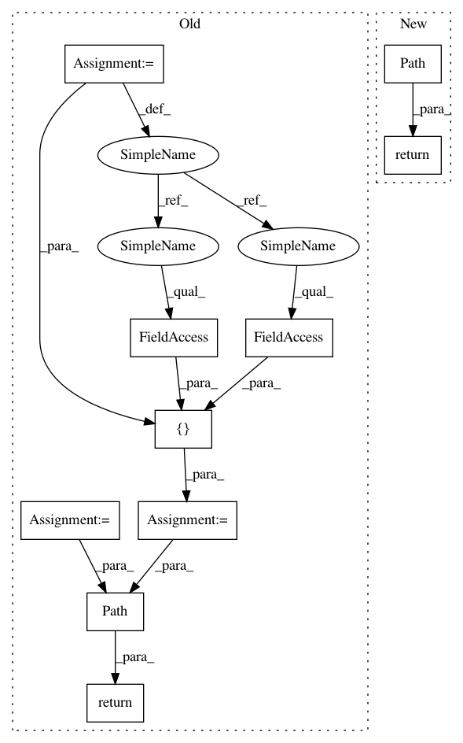

8db6d0503fda59832925e28ac4a773c8b29c3d3f,examples/userdemo/custom_boxstyle01.py,,custom_box_style,#Any#Any#Any#Any#Any#Any#,10
Before Change
x0, y0 = x0 - pad, y0 - pad
x1, y1 = x0 + width, y0 + height
cp = [(x0, y0),
(x1, y0), (x1, y1), (x0, y1),
(x0-pad, (y0+y1)/2.), (x0, y0),
(x0, y0)]
com = [Path.MOVETO,
Path.LINETO, Path.LINETO, Path.LINETO,
Path.LINETO, Path.LINETO,
Path.CLOSEPOLY]
path = Path(cp, com)
return path
import matplotlib.pyplot as plt
After Change
x0, y0 = x0 - pad, y0 - pad
x1, y1 = x0 + width, y0 + height
// return the new path
return Path([(x0, y0),
(x1, y0), (x1, y1), (x0, y1),
(x0-pad, (y0+y1)/2), (x0, y0),
(x0, y0)],
closed=True)
fig, ax = plt.subplots(figsize=(3, 3))
ax.text(0.5, 0.5, "Test", size=30, va="center", ha="center", rotation=30,
In pattern: SUPERPATTERN
Frequency: 3
Non-data size: 10
Instances
Project Name: matplotlib/matplotlib
Commit Name: 8db6d0503fda59832925e28ac4a773c8b29c3d3f
Time: 2020-03-01
Author: anntzer.lee@gmail.com
File Name: examples/userdemo/custom_boxstyle01.py
Class Name:
Method Name: custom_box_style
Project Name: matplotlib/matplotlib
Commit Name: 8db6d0503fda59832925e28ac4a773c8b29c3d3f
Time: 2020-03-01
Author: anntzer.lee@gmail.com
File Name: examples/userdemo/custom_boxstyle01.py
Class Name:
Method Name: custom_box_style
Project Name: matplotlib/matplotlib
Commit Name: f9fbe96bf352d22fe6a2800d62af3bf4b62bf322
Time: 2020-03-12
Author: anntzer.lee@gmail.com
File Name: lib/mpl_toolkits/axes_grid1/inset_locator.py
Class Name: BboxPatch
Method Name: get_path
Project Name: matplotlib/matplotlib
Commit Name: 7c9c01ba1914546fa4308988edff57ddb2729314
Time: 2020-03-12
Author: anntzer.lee@gmail.com
File Name: lib/mpl_toolkits/axes_grid1/inset_locator.py
Class Name: BboxConnector
Method Name: connect_bbox